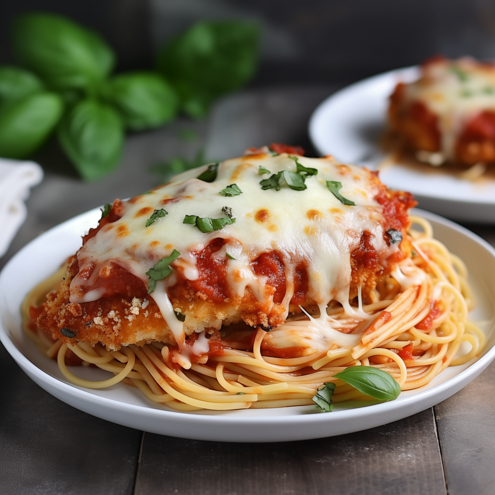

Chicken Parmesan

Description
Chicken Parmesan is no doubt the most popular non-pasta dish in Italian-American style restaurants. And while this delicious meal may seem fancy, it's actually pretty easy to make at home.
In fact, chicken Parmesan is one of those meals that's often best made in your own kitchen. The main problem I have with most versions of Chicken Parmesan served in restaurants is that they drown the chicken in so much sauce and cheese that it ends up being a big soggy clump of chicken and cheese. But it doesn't have to be that way, not with this method.
Ingredients
For about 4 servings:
- 2 chicken breasts - about 450 g
- Salt - 5 g
- Black pepper - 2 g
- All-purpose flour - 60 g
- Eggs - 2 large
- Breadcrumbs - 120 g
- Parmesan cheese - 50 g
- Mozzarella cheese - 150 g
- Marinara sauce - 400 g
- Olive oil - 30 ml
- Garlic - 2 cloves
- Italian seasoning - 5 g
- Fresh basil - 10 g
- Red pepper flakes - 1 g (optional)
Steps
- Preheat your oven to 200°C.
- Slice the chicken breasts horizontally to make thinner, even pieces.
- Season both sides of the chicken with salt, pepper and Italian seasoning.
- Set up three bowls: one with flour, one with beaten eggs, and one with breadcrumbs mixed with Parmesan.
- Coat each chicken piece in flour, then egg, then the breadcrump mixture.
- Heat olive oil in a large oven-safe skillet over medium-high heat.
- Cook the breaded chicken for about 3-4 minutes per side, until golden brown.
- Remove excess oil if necessary, then spoon marianara sauce over the chicken.
- Add mozzarella and some additional Parmesan on top.
- Transfer the skillet to the oven and bake for about 15-20 minutes, until the chicken reaches 74°C internally and the cheese is melted.
- Garnish with fresh basil.
- Let it rest for a few minutes before serving.
Home